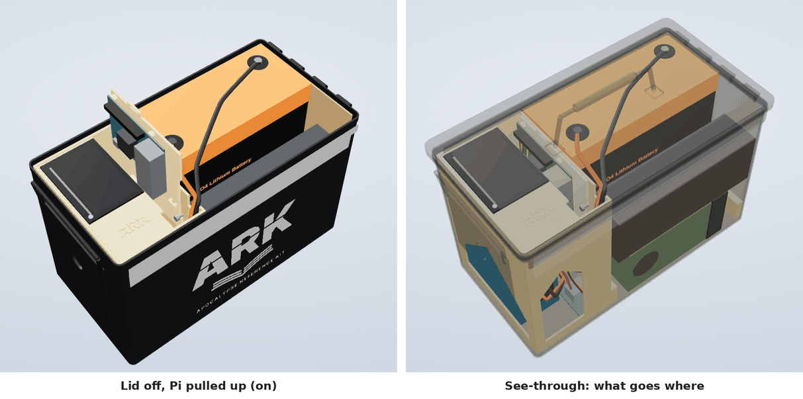
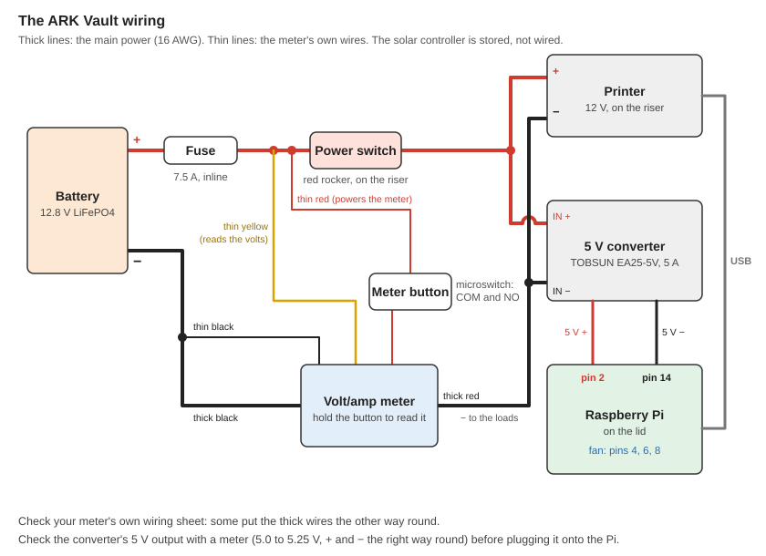
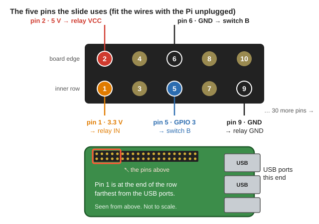

📘 Guides › 💾 Using this library · 🆘 Emergency · 📇 Index A–Z · 💬 Ask
🧰 ARK Vault: the Ammo-Can Library Computer
The ARK Vault is this whole library, ready for the day the power and the internet are gone, packed in one steel ammo can you can carry. Inside is everything it needs: a small computer (a Raspberry Pi) with the library and the offline AI, a battery, the chargers to fill that battery from the sun or the wall, a small printer, a crank radio, and an old phone to read it on.
Most of the time it sits sealed: lid shut and taped, nothing switched on, the steel shielding everything inside from an EMP or a solar storm. When you need it, open the lid and pull the Pi up: it switches on and makes its own Wi-Fi, and the phone from the can (or any phone nearby) opens the library and the AI in its web browser, with no screen, keyboard or internet. Push the Pi back down and it shuts itself down and switches everything off. Close the lid, tape it, and it's protected again.
The short version
- Pull up = on, push down = off. The Pi rides on a slide. Two small switches and a relay turn the power on, shut the Pi down safely and then cut the power, so nothing drains the battery.
- Shut = protected, open = in use. The can only shields while the lid is closed and taped. Never run it with the lid shut: it overheats, and phones can't reach it.
- The phone is the screen, and it lives in the can. An old phone with no SIM card or phone plan is fine. Any other phone nearby can join too.
- Charge it from the sun or the wall, lid open. The solar charge controller stays sealed inside with everything else; the solar panel stays outside, not connected to anything until you charge.
- No TV or keyboard needed to set it up. Write Raspberry Pi OS onto the memory card, let the library installer finish the card, plug everything in and pull the Pi up. It sets itself up.
- Steel can only. Plastic ammo cans block nothing. The lid seam gets taped over bare metal (see the EMP guide).
- Practice now. Build it, test it on the battery with the internet off, and check it every few months.
🧰 The idea
What lives inside the can, sealed:
- the Raspberry Pi and its library drive, on a slide that turns everything on and off
- the battery (LiFePO4, the safe lithium kind)
- the solar charge controller and the wall charger
- a small receipt printer, a crank radio
- an old phone (the screen), about half charged
- the Wi-Fi card taped in the lid, and a spare roll of foil tape for the seal
What stays outside: the solar panel, with nothing plugged into it. A panel is too big for the can, and it doesn't need shielding: tests in the library found panels hit with a strong pulse came through with only very minor change (Sandia, p. 39). The danger is the wires: a pulse gathers on long wires and travels down them into whatever they're plugged into, which is the charge controller (EMP guide). So the panel sits unplugged in the shed or under the bed, and gets plugged into the Vault only while it's charging.
Why the charge controller stays in the can: it's the electronic part a surge would damage, so it belongs inside the shield with the computer. It's also what makes solar charging safe: it feeds the battery exactly what a lithium battery needs and stops when it's full. Never connect a panel straight to the battery.
| What you do | What's happening | |
|---|---|---|
| Stored (most of the time) | Lid shut and taped, panel unplugged and outside | Nothing is on or connected. The steel can shields everything inside |
| In use | Open the lid, pull the Pi up, take out the phone | The Pi makes its own Wi-Fi; phones open the library in the browser |
| Charging | Lid open: plug the panel into the controller, or the wall charger into the wall | The battery fills while the Vault sits open (it can be in use at the same time) |
| Back to storage | Push the Pi down, unplug the panel, put the phone back, close and tape the lid | Shielded again. Do this right away if a solar-storm warning comes |
🧊 See it in 3D
Turn it, take the lid off, raise the Pi or lift the whole rack out. Tap a part's name under the model to hide or show it; to see one part on its own, tap Hide all, then that part. It works offline.

Lid off with the Pi pulled up (left), and see-through (right): pictures of the 3D model.🧭 How it works
| Lid shut and taped (storage) | Lid open, Pi up (in use) | |
|---|---|---|
| Shielded from EMP? | Yes: a closed metal shell keeps the pulse out (EMP guide) | No, but an EMP lasts seconds to minutes. Solar storms come with hours of warning |
| Running? | No: the relay has cut the power, and nothing passes through the can | Yes: the Pi, the printer and the Wi-Fi to the phones |
| Heat | None | The Pi gets warm. The open lid lets the heat out |
Why not run it sealed? A computer that's on needs Wi-Fi going out and a way to shed heat, and every cable or hole through the can breaks the shield. The government guidance is plain: no wires through, no holes drilled (right and wrong ways through a shield). So the can is the computer's storage box and shield, not its case while it runs. Charging is the same: lid open, cables in from the top, never through the wall.
The slide. The Pi sits on a printed carrier that slides up and down inside a printed rack.
- Pulling it up (about 2 inches, until it clicks) lets go of switch A, which turns the power on. The Pi starts, and its Wi-Fi antenna ends up above the rim of the can.
- Pushing it down (until it clicks) presses both switches. Switch B tells the Pi to shut down. While it shuts down, a relay held on by the Pi keeps the power on; once the Pi is off, the relay lets go (you hear a click, about 30 seconds later) and everything is off.
What the phones see: the Pi makes its own Wi-Fi network. Phones join it and open the library in the browser, the same way as sharing with phones nearby. Several phones can use it at once. Search and the books answer instantly. The AI answers one person at a time, in about a minute.
🛒 What to buy
| Part | What to get | Why |
|---|---|---|
| The can | A steel .50 cal ammo can (inside about 282 × 144 mm, 179 mm deep; 11 × 5¾ × 7 in) | Holds everything with the lid shut. Measure yours: cans vary a little |
| Battery | 12.8 V LiFePO4 (lithium iron phosphate), 20 Ah, about 182 × 77 × 170 mm | Runs the Pi for a day or two. LiFePO4 is the safe, long-lived lithium kind |
| Computer | Raspberry Pi 4 (4 GB or more) or Raspberry Pi 5 (8 GB) | A Pi 4 runs the small AI and is easy on the battery. A Pi 5 runs a bigger AI. Same size, same holes, same carrier: swap later |
| Cooler | A stick-on heatsink set, under 16 mm tall (no fan case) | The AI works the chip hard. A tall case won't fit on the carrier |
| Memory card | microSD card, 32 GB or more | Holds the Pi's own system |
| Library drive | A small USB SSD, 256 GB or more, formatted exFAT; the thumb-drive kind that plugs straight into the Pi | The full library is about 170 GB; see How big a drive?. It rides up and down with the Pi |
| Power for the Pi | A 12 V to USB-C adapter, 5 V 5 A (USB-C PD), and a short right-angle USB-C lead (30 cm, 5 A) | 5 A is enough for a Pi 5 too |
| The slide's electrics | 2 × KW12-3 roller micro switches; a 5 V 1-channel relay module, 10 A contacts, high-level trigger (its H/L jumper on H); 5 female-female jumper wires (30 cm); a 7.5 A inline fuse | Switch A turns the power on, switch B shuts the Pi down, the relay cuts the power after |
| Screws | 4 × M2.5 × 8 mm (the Pi), 2 × M2 × 20 mm with nuts (the switches), 1 × M3 × 12 mm with nut (the slide's top stop), zip ties | |
| Printer (optional) | DFRobot Embedded Thermal Printer (DFR0503), and 57 × 30 mm thermal paper | Prints guides and answers (printing) |
| Radio | A small crank radio, up to 132 × 51 × 66 mm (5.2 × 2 × 2.6 in) | News and weather with no grid (Radio guide) |
| Solar charging | Victron SmartSolar MPPT 75/15 (100 × 113 × 50 mm), a 20 A fuse, and a 12 V solar panel (50–100 W) | Stands inside the rack. Charges the battery right (Off-Grid Power) |
| Wall charging | A small LiFePO4 charger, 12 V, about 2 A, with a lithium setting (the model has a MOTOPOWER MP00207A, 175 × 60 × 45 mm) | Lies in the can on the radio |
| Lining | 2 mm cardboard (laser cut, or by hand from the drawings) and double-sided tape | Keeps everything off the bare steel |
| Seal | Copper or aluminum foil tape with conductive glue | Closes the gap the rubber gasket leaves (EMP guide) |
| Screen | An old phone (or small tablet) with a web browser, and its charging cable | It lives in the can. Any phone works, iPhones too; no SIM card or plan needed |
| For setup | Your regular computer with a memory-card reader | No TV, keyboard or mouse needed |
Plastic cans don't work. Plastic and fiberglass cans let the pulse straight through. Buy steel (Ammunition box).
📐 The parts to print, cut and etch
⬇️ Download the parts (ark-can-parts.zip) (from the website). Its READ-ME-FIRST.txt has every size, the wiring and the settings in one place.
- printed/: the rack, the Pi carrier, the printer plate and two battery spacers. Print in ABS (it stands the heat of a car better than PLA (rule of thumb)), no supports, 3 walls, 15–20% infill, each the way round it comes.
- cardboard/: the lining (floor, two long walls, two end walls, a sheet for under the lid), at real size. Red lines are cuts.
- laser/: the ARK Vault logo for the side of the can, and two bare-metal strips along the lid seam on both long sides, for the foil tape. For a laser that burns through paint.
 Where the logo and the bare-metal strips go. No laser? Scrape the paint off the same strips by hand.
Where the logo and the bare-metal strips go. No laser? Scrape the paint off the same strips by hand.
🔧 Build it, step by step
1. Get the can ready
- Bare metal at the seam. Etch the two strips with a laser, or scrape the paint off by hand: a strip on the lid's edge and one on the body just below it, on both long sides. The foil tape goes over these, metal to metal. See the EMP guide's Faraday containers section.
- Line it. Lay the cardboard floor (its hole fits over the raised panel in the can's floor), then the walls. Tape the lid sheet under the lid with double-sided tape: it keeps the battery's bolts off the steel.
2. The battery
Stand the battery at the hinge end, terminals up, and slip the two printed spacers in to hold it still. Fit its leads now (ring terminals on the bolts), with the 7.5 A fuse in the plus lead, close to the battery.
3. The rack
- Screw the two switches onto the block under the slide, on the two M2 screws, nuts on the battery side. Leave them loose for now.
- Stand the solar controller inside the rack, against the latch end, its screw terminals facing the open front (its wires need about an inch there).
- Put the printer into the printer plate and drop the plate onto its ledges.
- Fit the relay module and the 12 V to USB-C adapter in the rack, then stand the rack at the latch end of the can.
4. The Pi on its slide
- Stick the heatsinks on the Pi. Screw the Pi onto the carrier (4 × M2.5 screws).
- Plug the library drive into a blue USB port, and the right-angle USB-C lead into the Pi's power socket.
- Slide the bare carrier into the rails first: it should move freely. If it's tight, sand its two edges lightly.
- With the carrier resting down on its shelves, slide the switches up until both click, then 1 mm more, and tighten them.
- Fit the M3 stop screw last (head inside, nut outside). It stops the carrier at the top. Take it out to lift the Pi out for repairs.
- Zip-tie the USB-C lead and the printer's USB lead to the carrier's loops, leaving a 3-inch loop so the Pi can travel up and down.
5. Wiring

The whole wiring. Switch A and the relay sit side by side: either one gives power (a diagram drawn for this guide).- Battery + → 7.5 A fuse → switch A (COM and NC) and the relay (COM and NO), side by side → the adapter's + and the printer's +.
- Battery − → the adapter's − and the printer's −.
- Relay module (jumper wires): IN → Pi pin 1 (3.3 V), VCC → pin 2 (5 V), GND → pin 9.
- Switch B (COM and NO) → Pi pins 5 and 6, either way round.
- The adapter's USB-C → the Pi. The printer's USB → the Pi.

Pin 1 is at the end farthest from the USB ports, on the inner row. The even pins are along the board's edge (a diagram drawn for this guide).Why it works: while the Pi runs, its 3.3-volt pin holds the relay on, so the power stays on after switch A opens. Switch B makes the Pi shut down. Once it's off, its 3.3-volt pin goes off too, the relay lets go, and nothing draws from the battery. (The Pi has to be told to switch that pin off at shutdown: the setup below does it.)
6. The rest
- The radio lies on the floor in front of the battery; the wall charger lies on its side on top of the radio.
- The phone and its cable go in the space left beside the battery, in a padded bag or a sleeve of the cardboard, so nothing metal touches it.
- Solar: the controller's battery terminals go to the battery through the 20 A fuse. Its panel terminals stay empty until you charge (see Power and charging).
- Nothing should touch bare metal. Loose metal can short things out, and the EMP guidance is to keep items off the walls (CISA, p. 45).
💾 Set up the Pi (no TV or keyboard)
The library installer prepares the Pi's memory card so the Pi sets itself up the first time it starts. The steps are the same for a Pi 4 and a Pi 5.
- Fill the library drive with the installer: ⬇️ Download the installer kit (ark-illinois-valley-kit.zip). It's the same kit for every computer and for the ARK Vault; see Get the whole library. Keep the drive exFAT, and keep Offline AI and Works on every kind of device ticked (that one puts the Raspberry Pi version on the drive).
- Write Raspberry Pi OS onto the memory card with Raspberry Pi Imager (free, from raspberrypi.com) on your regular computer:
- Device: your Pi (Raspberry Pi 4 or 5).
- Operating system: Raspberry Pi OS (other) → Raspberry Pi OS Lite (64-bit).
- Storage: the memory card. When it asks about customisation, choose No. Write it.
- When it's finished, take the card out and plug it back in.
- Finish the card with the library installer. Start INSTALL again (the same kit you filled the drive with) and press Finish a Raspberry Pi memory card on its first page. Pick the card (it's called bootfs), keep or change the Wi-Fi name and password, leave It's in the ARK ammo can, on the slide ticked, and press Finish the memory card. Write down the Wi-Fi name and password it shows.
- Eject the card and put it in the Pi. Make sure the library drive is in a blue USB port.
- Pull the Pi up. Its green light beats like a heart while it sets itself up (about 5 minutes, sometimes longer). Then it restarts by itself. 2–3 minutes after that, its Wi-Fi appears (a bit longer the first time, while the AI times itself and picks its size).
What the setup does: the Pi makes its own Wi-Fi every time it starts, starts the library by itself and shares it, mounts the library drive in the same place every time, lets the library use the printer, turns pins 5 and 6 into the shut-down switch, and tells the Pi to switch everything off once it has shut down (so the relay lets go). It also saves PI-WIFI-CARD.html at the top of the library drive with the Wi-Fi name, password and address: print it later on any computer and tape it inside the lid.
If the green light keeps blinking fast instead, it got stuck. Push the Pi down (or unplug the battery lead), put the memory card in your computer and open ark → setup-log.txt: the last lines say why (usually the library drive wasn't plugged in). Fix it, put the card back and pull the Pi up again. It tries again at every start until it has worked.
Moving to a Pi 5 later: finish the same card again with the installer (step 3), then put it in the Pi 5. The new Pi needs its own shut-down settings, and finishing the card makes it set itself up again.
The Pi's own login is only needed for repairs with a screen and keyboard: user name ark, password the same as the Wi-Fi password.
Test it the way you'll use it
- Pull the Pi up and wait 2–3 minutes.
- On the phone, open Settings → Wi-Fi, join the Pi's Wi-Fi (Emergency-Library unless you changed it) with the password. If it says no internet, tap Stay connected / Keep.
- Open the phone's browser and type the address exactly:
http://192.168.4.1:8096. - Search for something, open a guide, ask the AI a question, and print something.
- Push the Pi down. Its green light flickers, then stays off; about 30 seconds later the relay clicks and the printer's light goes out. That's the whole thing off.
- Do it all again with the home internet switched off.
🆘 Using it
- Open the lid and pull the Pi up until it clicks. Keep the can in the shade.
- Take out the phone and switch it on. Wait 2–3 minutes for the Pi.
- On the phone (and any others): join the Pi's Wi-Fi, open the browser, type the address from the card in the lid. Save it as a bookmark on the can's phone so it's one tap next time.
- To turn it off: push the Pi down until it clicks. Wait for the relay's click (about 30 seconds). Close the lid and tape the seam again.
Is it safe to have it out? A nuclear EMP is over in seconds to minutes. A solar storm comes with 18–72 hours' warning. If a warning comes, push the Pi down and seal the can (see when a solar-storm warning comes). Use it the rest of the time.
Save the battery: push the Pi down when nobody needs it. Searching and reading use little power; the AI uses the most.
🖨️ Printing on paper
The receipt printer in the rack lets anyone on the Pi's Wi-Fi print a guide section, an AI answer or a book page, to take to the garden, the barn or a neighbor. It's a thermal printer: heat-sensitive paper, no ink or ribbon to run out of. It gets its power from the battery with everything else, so it's on whenever the Pi is up.
Paper: thermal rolls 57 × 30 mm (2¼ inches wide, no more than 30 mm across the roll), plain, not sticker paper. A roll is about 8.5 m (28 ft). Only one side prints: if the paper comes out blank, turn the roll over.
Printing:
- 🖨️ Print is at the top of every guide and every other page of the library, in an e-book's top bar, and at the bottom right of encyclopedia articles. Under each AI answer there's 🖨️ Print this answer, and next to each book in its sources, 🖨️ page prints that book page.
- Choose this section (the one you're reading), the whole page, or text you selected first. A book page prints as its words, or as a picture for drawings (bigger in 2 or 3 strips, which takes more paper).
- The preview shows exactly what will come out, and how much paper it takes. Save the picture keeps it on the phone instead.
| Size | Characters a line | A typical guide section | Good for |
|---|---|---|---|
| Tiny | 76 | about 2–3 inches | the most on the least paper; read it close up |
| Small | 64 | about 3 inches | everyday use |
| Medium | 48 | about 4–5 inches | easier reading |
| Large | 38 | about 7 inches | weak eyes, signs and notes |
(Lengths measured with the library's own preview.) In Tiny the letters are about 1 mm tall. The preview warns when a print has doses or measurements in it: in Tiny, check every number on the paper, or print those in Small or Medium.
To save paper and power: print one section at a time, use Tiny, and leave Pictures and Book page references off (both are off unless you tick them). Dark pictures take the most power (rule of thumb).
Looking after prints: thermal prints fade with heat, sunlight and time. Keep them out of the sun and away from the stove, and copy anything you'll need for years in pencil (rule of thumb). Keep spare rolls sealed in a bag, cool and dark.
Another printer: other 58 mm receipt printers with USB that understand standard "ESC/POS" commands should work too (rule of thumb); they need 9–24 volts and up to 2.5 amps while printing, so a USB power bank won't run them. A printer on the Pi's serial pins needs the library started with -printer /dev/serial0.
🔋 Power and charging
The Pi 4 uses roughly 3–4 watts while it sits waiting and around 7 watts while the AI writes an answer; a Pi 5 a bit more (rule of thumb). The 20 Ah battery holds about 250 watt-hours, so it runs the Pi for about 30–40 hours of normal use: a long day of use for a week, with the Pi pushed down in between (rule of thumb).
Solar (Victron SmartSolar MPPT 75/15, which stays inside the can): open the lid, lay the panel in the sun and plug it into the controller's panel terminals, with the cable coming in over the top. When you're done, unplug the panel and store it outside the can with nothing connected to it (see The idea). A plug-and-socket pair on the panel lead (an SAE or Anderson connector) makes this a five-second job. Set it up once in the VictronConnect phone app (it talks over Bluetooth): battery type LiFePO4, maximum charge current about 10 A (check your battery's manual). A 100 W panel fills the battery in about a sunny day; much less in winter. More about panels and batteries: Off-Grid Power.
From the wall: plug the charger in with the lid open, set it to lithium (LiFePO4). At 2 A it takes about 10 hours from empty. Unplug it when its Full light comes on. Its leads can stay on the battery (with their own 7.5 A fuse) so you only plug it in.
The phone: charge it from any phone charger, or from one of the Pi's USB ports while the Vault is running (slowly; if the Pi ever restarts, unplug the phone). Keep it about half charged in storage.
Never charge with the lid shut, and never run a cable through a hole in the can. Never connect the panel straight to the battery: always through the controller.
📦 Packing and sealing
- Push the Pi down and wait for the relay's click. Unplug the solar panel if it's connected, and put the phone back in its place.
- Charge the battery to about half or a bit more for long storage (rule of thumb), then top it up every few months.
- Close the lid and run the foil tape all the way around the seam, over the bare-metal strips, so it touches bare metal on the lid and on the body (why seams matter). Keep a spare roll of tape in the can.
- Test the seal with the phone-and-radio test in the EMP guide: tape the can shut with a phone inside and call it, then a battery AM radio tuned to a station. Silence means no big leaks.
Store it somewhere cool and dry, not in a hot car or shed.
🛠️ If something goes wrong
| Problem | Try this |
|---|---|
| The first setup: the green light blinks fast and keeps blinking | It got stuck. Push the Pi down, put the memory card in your computer and read ark/setup-log.txt. Usually: plug in the library drive, then pull the Pi up again |
| The first setup: nothing happens at all, no light | Check the power: the fuse, the battery's charge, and that switch A clicks free when the Pi is up. Was the card written with Raspberry Pi Imager and finished by the installer? |
| The Wi-Fi name doesn't show up on the phone | Wait the full 3 minutes. Is the lid open and the Pi all the way up? Push it down, wait for the click, pull it up and wait again |
| Joined the Wi-Fi, but the page won't open | Type the address exactly, including http:// and :8096. Turn on airplane mode, then turn Wi-Fi back on (some phones use mobile data instead of a Wi-Fi with no internet). Right after power-up, wait another minute |
| The page opens but the AI says it isn't ready | It's still loading. Give it a minute or two. Search and the books work meanwhile |
| The AI is very slow | It picks a size to suit the Pi. On a Pi 4 it uses the small AI. Searching and reading the books stay fast |
| Pushed down, the Pi shut down, but the relay never clicks | The Pi wasn't told to switch everything off at shutdown. Finish the card again with the installer (slide ticked) and let it set itself up again. For now: unplug the battery lead once the Pi's green light has stayed off for 20 seconds |
| Pushed down, but the Pi keeps running | Switch B isn't pressed or isn't on pins 5 and 6. With the carrier down, both switches must click: loosen them, slide them up 1 mm and tighten |
| Pulled up, but it won't start | Switch A isn't letting go: check it clicks when the carrier lifts. If the Pi ever doesn't start, push it down, wait half a minute, pull it up again |
| The Pi keeps restarting, or the drive disappears | Not enough power: the adapter must give 5 V 5 A, and its lead must be a 5 A one. Check the battery's charge |
| The carrier sticks | Sand its two edges lightly. ABS shrinks a little as it cools, so the first print may be snug |
| The printer: No printer found | Is its USB lead in the Pi, and is the printer's power lead on? Close the print window and open it again |
| The printer: not allowed to use the printer | Finish the card again (or run the setup again), then restart |
| The printer feeds blank paper | The roll is in upside down: only one side of thermal paper prints. Turn it over |
| The print is faint or stops partway | The battery is low. Charge it |
| Forgot the Wi-Fi password | Plug the library drive into any computer and open PI-WIFI-CARD.html |
| No phone can connect at all, or there's no phone | Use a TV or computer monitor instead: plug it into the Pi (the micro-HDMI port next to the power socket) with a USB keyboard, log in (user ark, the Wi-Fi password) and type bash /mnt/emergency-library/OfflineLibrary/SETUP-Raspberry-Pi.sh --screen. Say y to restart. Lite has no desktop, so for a screen use Raspberry Pi OS (64-bit), the desktop version, from the start |
| Want home internet on the Pi again (for updates) | Plug in a network cable. Or log in and run the setup with --undo, then restart. Running the setup again later keeps the same Wi-Fi name and password |
Running the setup by hand (with a screen and keyboard): log in, then type bash /mnt/emergency-library/OfflineLibrary/SETUP-Raspberry-Pi.sh (or the path to wherever your library is) and press Enter. It asks the same questions the installer did.
🖐️ Other ways to build it
- A touchscreen on the Pi (a 7-inch screen, say) shows the library right on the Pi, with no phone. It needs Raspberry Pi OS (64-bit), the desktop version, not Lite, and the touchscreen box ticked when you finish the card. It won't fit on the slide: it's for a bigger box.
- No slide (a Pi on a shelf, or in a bigger box): untick on the slide when you finish the card, and power it from a USB-C supply or power bank (5 V, 3 A or more; a 27 W Raspberry Pi supply for a Pi 5). A Pi 5 has a power button: press once to shut down, wait for the red light, unplug. A Pi 4 gets one on pins 5 and 6: a spring-back push button on two female jumper wires.
 No slide on a Pi 4: a push button on pins 5 and 6 shuts it down safely (a diagram drawn for this guide).
No slide on a Pi 4: a push button on pins 5 and 6 shuts it down safely (a diagram drawn for this guide).
🔄 Every few months
- Top up the battery and the phone to about half or a bit more.
- Pull the Pi up and run through the test above. Then push it down, wait for the click, close the lid and re-tape the seam.
- Updating the library: plug the drive into your regular computer and run the installer again (it adds what's new). Nothing needs to change on the Pi.
- Swap the foil tape if it's torn or stops sticking.
🖼️ Pictures & diagrams
- The Raspberry Pi itself — Raspberry Pi
- Steel ammunition cans — Ammunition box
- How a closed metal box blocks a pulse — Faraday cage; Electromagnetic shielding
- Why a wire through the box ruins it — MIL-HDBK-419A Vol 2, p. 315
- How fields leak through seams and slots — MIL-HDBK-419A Vol 1, p. 275
- What 10, 20 and 30 dB of shielding buys — CISA, p. 77
- The battery kind — Lithium iron phosphate battery; solar chargers — Maximum power point tracking
- How the relay works — Relay; the switches — Miniature snap-action switch
🔗 Related guides
- EMP, Solar Storms & Faraday Cages: building and testing the shield
- Start the Library on Any Device: sharing with phones, and other devices
- Off-Grid Power: batteries and solar to keep it running
- Get the Whole Library: filling the library drive
- Emergency Radio Guide: another thing worth keeping in a sealed can